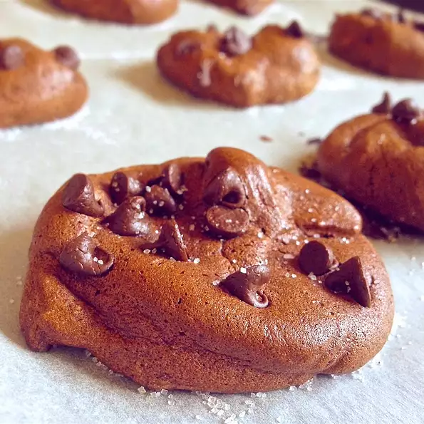

Chocolate Cookies

Description
These cookies taste like flour-less chocolate cake. They also happen to be gluten-free and grain-free.
Ingredients
- 6 ounces dark chocolate, chopped
- 3 egg whites
- 1/4 cup white sugar
- 1 pinch cream of tartar
- 1/2 teaspoon vanilla extract
- 1/4 cup semi-sweet chocolate chips
Directions
- Preheat oven to 350 degrees F (175 degrees C). Line a baking sheet with baking parchment.
- Melt the chocolate in the top of a double boiler over simmering water, stirring frequently and scraping down the sides with a rubber spatula to avoid scorching. Let chocolate cool slightly while preparing the egg whites.
- Beat egg whites in a glass or metal bowl until foamy. Gradually add sugar, continuing to beat until stiff peaks form. Lift your beater or whisk straight up: the egg whites will form sharp peaks. Stir cream of tartar into the egg whites.
- Scoop some of the egg whites into the cooled melted chocolate and fold until smooth. Fold the chocolate mixture into the remaining egg whites. Fold in vanilla extract. Stir chocolate chips into the mixture; drop by spoonful onto the prepared baking sheet.
- Bake until cookies set in their centers, 10 to 15 minutes.